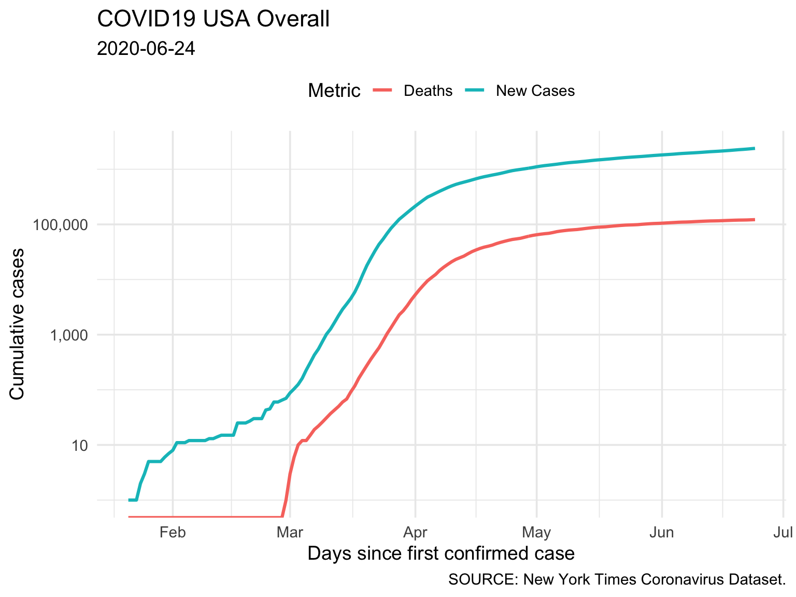
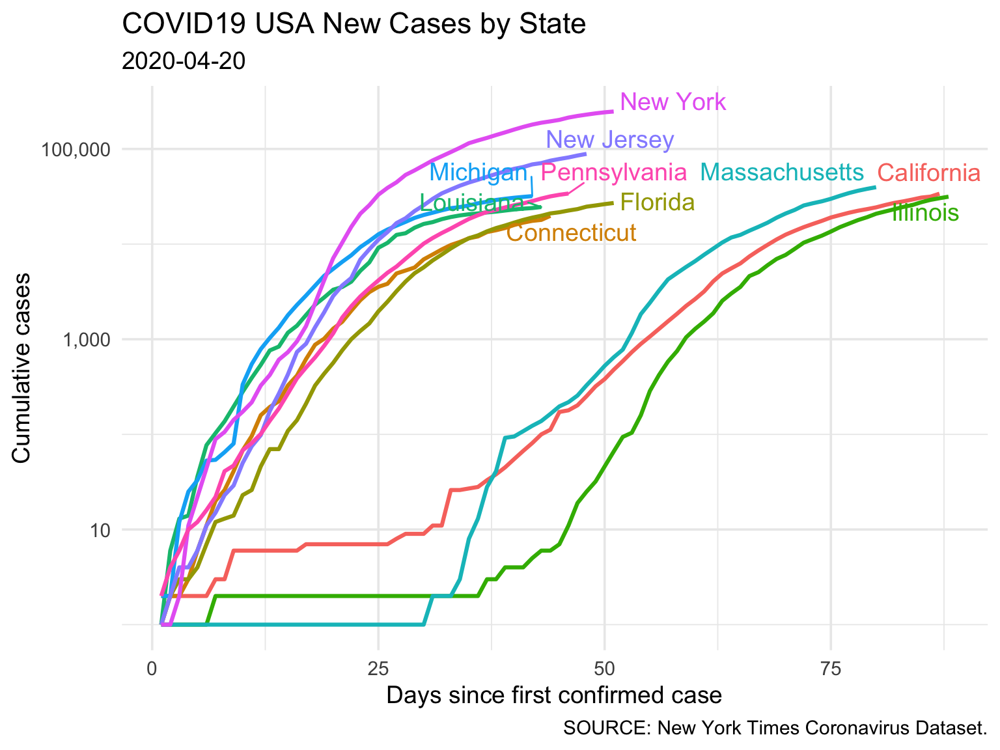
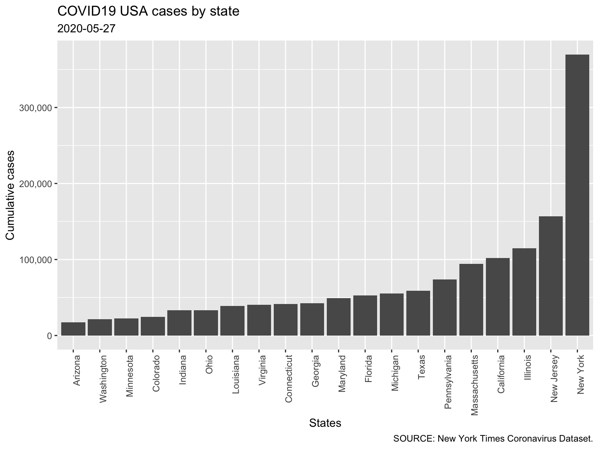
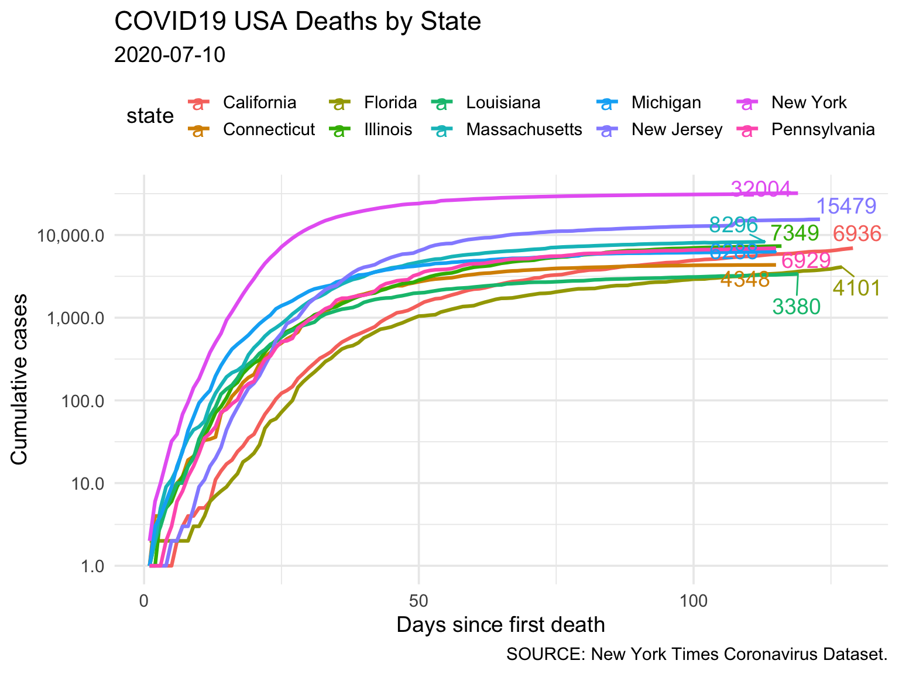
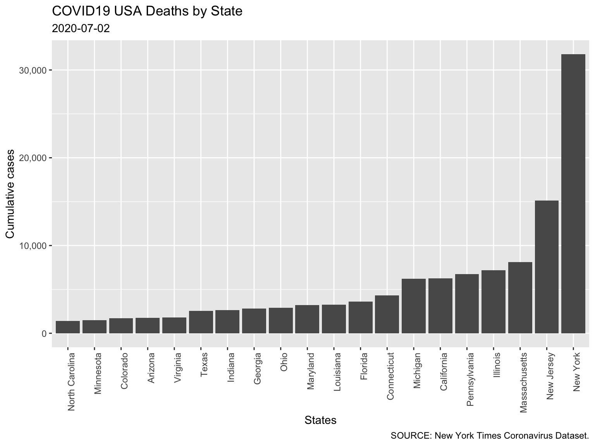
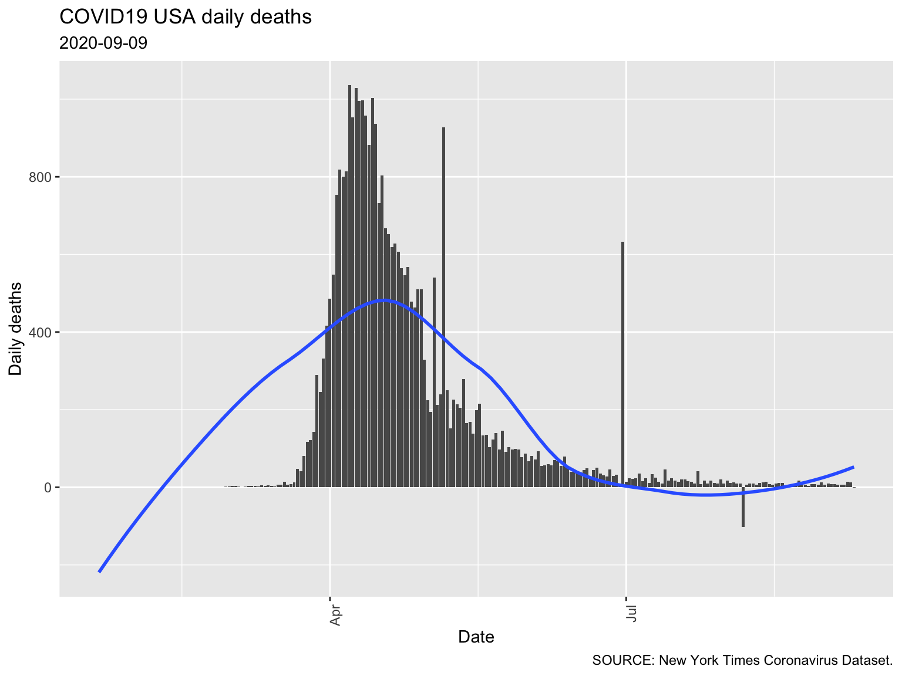
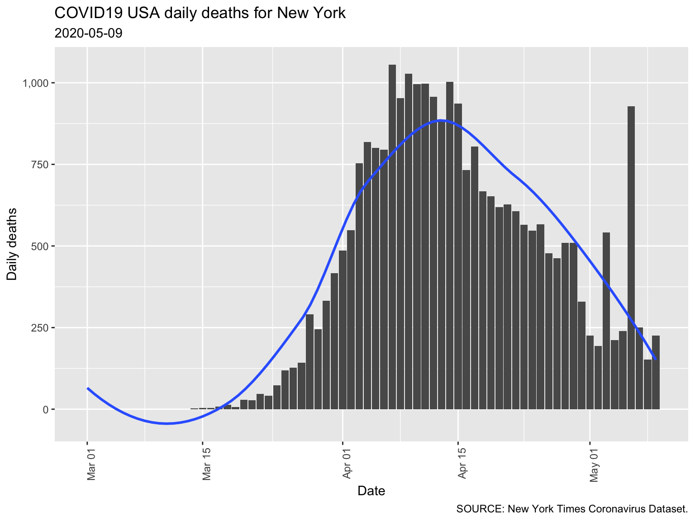
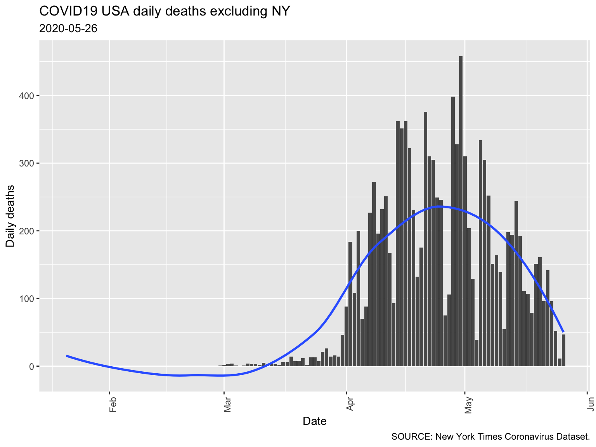

Report 2 USA
Report last updated: 2020-05-20
Data last refreshed: : 2020-05-19
2.1 Overall trend

2.2 Confirmed Cases


| State | Total cases |
|---|---|
| New York | 356278 |
| New Jersey | 148039 |
| Illinois | 96778 |
| Massachusetts | 87052 |
| California | 81943 |
| Pennsylvania | 66676 |
| Michigan | 51853 |
| Texas | 49788 |
| Florida | 46434 |
| Maryland | 39882 |
| Connecticut | 38116 |
| Georgia | 36634 |
| Louisiana | 34709 |
| Virginia | 31140 |
| Indiana | 28897 |
2.3 Deaths


| State | Total cases |
|---|---|
| New York | 28302 |
| New Jersey | 10435 |
| Massachusetts | 5862 |
| Michigan | 4915 |
| Pennsylvania | 4560 |
| Illinois | 4257 |
| Connecticut | 3449 |
| California | 3322 |
| Louisiana | 2440 |
| Maryland | 2023 |
| Florida | 1996 |
| Indiana | 1765 |
| Ohio | 1657 |
| Georgia | 1624 |
| Texas | 1362 |
| Colorado | 1224 |
| Washington | 1020 |
| Virginia | 1014 |
| Minnesota | 740 |
| Arizona | 686 |
2.4 Daily Deaths


2.5 Daily Deaths excluding NY
